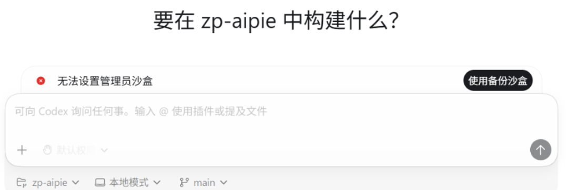

Codex 客户端报错无法设置管理员沙盒的解决方法
如果 Codex 客户端打开后提示“无法设置管理员沙盒”或 sandbox initialization failed，
通常不一定是系统权限问题。实际排查中，更常见的原因是本地 config.toml 配置文件异常。

| 方法 | 是否推荐 |
|---|---|
重命名 config.toml |
推荐 |
删除 config.toml |
推荐 |
| 注销后重新登录 | 可尝试 |
报错现象
常见情况包括：
- 打开客户端直接报错
- 无法进入主界面
- 无法设置管理员沙盒
- 登录后闪退
- 更新后突然无法启动
部分用户看到的提示类似：
无法设置管理员沙盒 / sandbox initialization failed问题原因
大部分情况下，这个问题并不是 Windows 权限本身导致的，而是 Codex 的本地配置文件异常。
相关配置文件通常位于：
C:\Users\YOUR_USER_NAME\.codex\config.toml以下场景都可能导致配置异常：
- 更新客户端后
- 手动修改过配置
- 登录状态异常
- 多设备同步配置
解决办法
方法 1：重命名 config.toml
进入下面目录：
C:\Users\YOUR_USER_NAME\.codex\找到：
config.toml将其重命名，例如：
config_backup.toml然后重新启动 Codex。客户端会自动生成新的配置文件。
方法 2：直接删除 config.toml
如果不需要保留原配置，可以直接删除：
C:\Users\YOUR_USER_NAME\.codex\config.toml重新打开 Codex 后，客户端会自动创建新的默认配置。
方法 3：注销后重新登录
如果前两个方法仍然无法解决，可以尝试注销 Codex 账号后重新登录。
这个方法更适合登录状态异常导致的问题。如果是配置文件损坏，优先尝试重命名或删除
config.toml。
注：注销方式只是尝试解决方法，任何问题本文概不负责